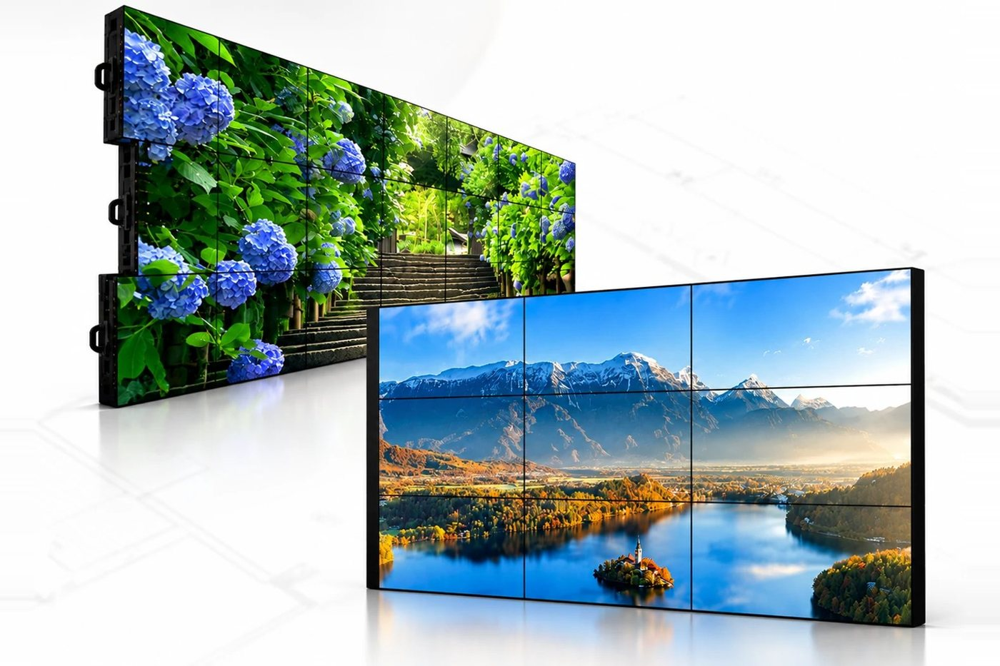
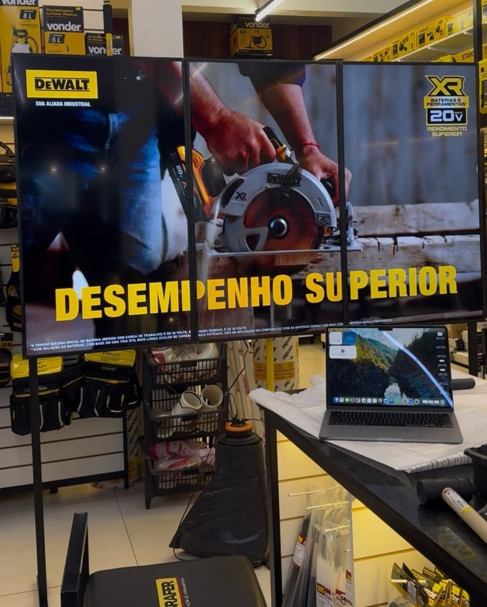
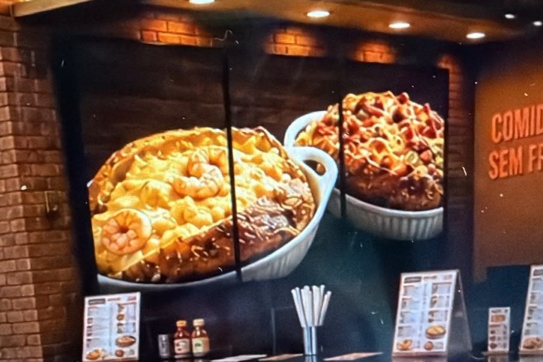
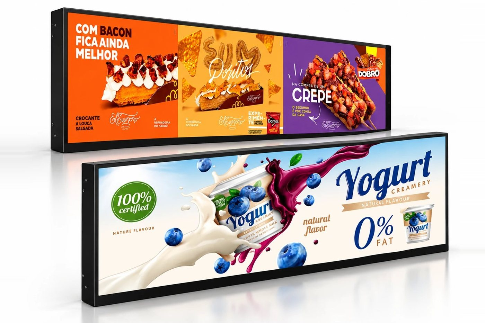
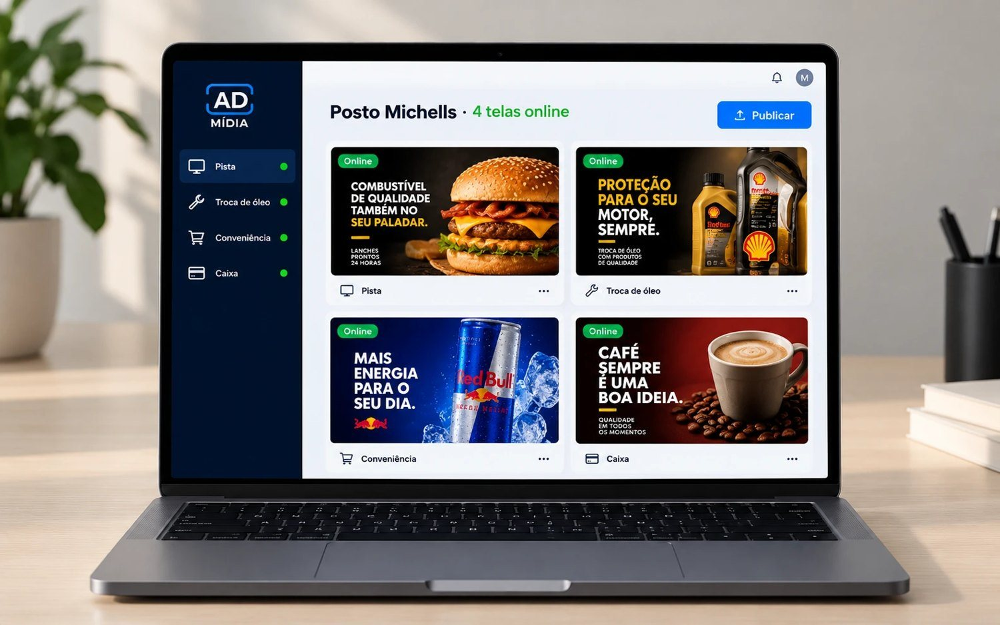

Telas nos pontos de atendimento mostrando o que a Prefeitura está fazendo, campanhas de saúde, serviços e avisos importantes. Tudo trocado à distância, em minutos, por quem cuida da comunicação.
Proposta da ADmídia Publicidade Digital · Tubarão/SC
Todos os dias, centenas de pessoas esperam atendimento nas unidades do município. É o melhor momento para informar, e hoje ele passa em branco.
Obras, entregas, serviços e programas apresentados para quem é atendido pela Prefeitura.
Vacinação, dengue, Outubro Rosa, Novembro Azul: na tela da sala de espera, na hora certa.
Chuva, nível do rio, mudança de horário ou feriado: um aviso publicado em todas as telas de uma vez.
A Comunicação controla o conteúdo de todas as unidades pelo computador ou celular, sem pendrive e sem ir até o local.
Cartaz, mural e impressão trocados por tela. O conteúdo muda quantas vezes for preciso, sem custo de gráfica.
Informação útil enquanto o cidadão aguarda deixa o atendimento mais organizado e a espera menos cansativa.
Sugestão de pontos para as 15 primeiras telas. A Prefeitura escolhe os locais.
A ideia é simples: a Prefeitura conhece o trabalho funcionando, nas próprias unidades, antes de qualquer decisão.
A Prefeitura indica os 15 pontos com mais atendimento.
A ADmídia instala, configura e coloca as telas no ar com o sistema de gestão.
Montamos a programação com a equipe de Comunicação, a partir do que a Prefeitura quer mostrar.
Ao fim do período, avaliamos juntos os resultados e os próximos passos.
Telas simples, várias telas lado a lado ou videowall: o formato acompanha o espaço de cada unidade.





A equipe da Prefeitura troca o conteúdo pelo computador ou celular e vê na hora quais telas estão online.

Marcamos uma conversa com a equipe de Comunicação e mostramos o sistema funcionando.
WhatsApp: (48) 99107-9940